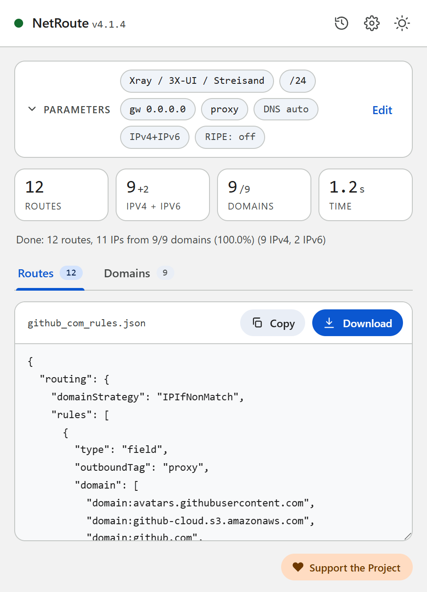
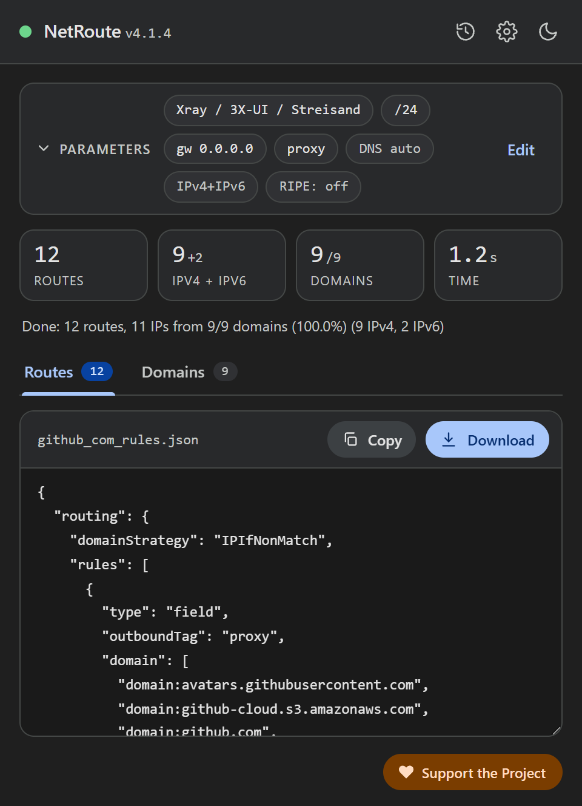

Reglas de enrutamiento de Xray desde cualquier sitio web: Xray-core, 3X-UI, v2rayN
Xray dirige las conexiones mediante routing.rules: listas de dominios y direcciones más el tag de un outbound. NetRoute construye esas reglas desde un sitio web en dos variantes: un fragmento de configuración de Xray-core — que sirve también para el panel 3X-UI, donde la configuración de Xray se edita como JSON — y un archivo para importar reglas en v2rayN.
Qué contiene el archivo
El formato «Xray / 3X-UI / Streisand» es un fragmento de configuración de Xray-core con una sección routing. Los dominios y las redes son dos reglas, cada una con su propia lista y un outboundTag común:
{
"routing": {
"domainStrategy": "IPIfNonMatch",
"rules": [
{ "type": "field", "outboundTag": "proxy", "domain": ["domain:github.com", "domain:githubusercontent.com"] },
{ "type": "field", "outboundTag": "proxy", "ip": ["140.82.112.0/20", "185.199.108.0/22", "2606:50c0::/32"] }
]
}
}domain:name— según la documentación de Xray, el propio dominio y sus subdominios. La lista está compactada: cuando se encuentranapi.github.comygithub.com, solo quedagithub.com;www.se descarta. Se incluyen todos los dominios del escaneo, también los que no se resolvieron a una IP.ip— direcciones en forma CIDR; las mismas redes agregadas que NetRoute emite como rutas de router, IPv4 e IPv6.outboundTag— el tag del outbound del campo Dispositivo de NetRoute;proxypor defecto.domainStrategy: IPIfNonMatch— según la documentación de Xray, un dominio se resuelve a una dirección solo cuando ninguna regla coincidió por nombre; el valor por defecto del propio Xray esAsIs, sin resolución.
El formato «v2rayN (rules import)» es un array de reglas con la forma que v2rayN importa desde el portapapeles o un archivo (como en el repositorio v2rayCustomRoutingList del autor de v2rayN):
[
{ "port": "", "outboundTag": "proxy", "domain": ["domain:github.com", "domain:githubusercontent.com"], "enabled": true, "remarks": "NetRoute github.com domains" },
{ "port": "", "outboundTag": "proxy", "ip": ["140.82.112.0/20", "185.199.108.0/22", "2606:50c0::/32"], "enabled": true, "remarks": "NetRoute github.com networks" }
]

Qué necesitas
- Xray-core con un outbound configurado y un tag conocido — en un equipo, un servidor o en el panel 3X-UI
- o v2rayN para Windows, Linux o macOS — un cliente con los núcleos Xray y sing-box
- La extensión NetRoute en Chrome
Paso 1. Genera las reglas en NetRoute
- Abre el sitio web en Chrome y recarga la página para que el sniffer de la extensión vea las solicitudes en segundo plano
- Inicia NetRoute
- En SO de destino, grupo «Clientes proxy», elige Xray / 3X-UI / Streisand para una configuración de Xray-core o v2rayN (rules import) para importar en v2rayN
- En el campo Dispositivo introduce el tag de tu outbound — el texto de ejemplo del campo muestra el valor por defecto
proxy. El campo IP de puerta de enlace no afecta a estos formatos - Haz clic en Analizar sitio web
- En la pestaña Dominios desmarca lo que no necesites — las reglas se actualizan al instante
- Haz clic en Descargar: el archivo recibe el nombre del sitio, por ejemplo
github_com_rules.json
Paso 2a. Xray-core: inserta las reglas en la configuración
Abre el config.json de Xray y añade ambos objetos de rules al array routing.rules por encima de las reglas generales. Según la documentación de Xray, las reglas se comprueban de arriba abajo y gana la primera coincidencia; una conexión que no coincidió con ninguna regla sale por el primer outbound de la configuración. Asegúrate de que outboundTag es igual al tag de tu outbound de proxy y de que domainStrategy está definido una sola vez en la sección routing.
Reinicia Xray.
Paso 2b. 3X-UI: reglas en los ajustes de Xray
3X-UI es un panel web para servidores Xray-core. Según su documentación, las reglas de enrutamiento son reglas de Xray con los matchers domain, ip, port, network, protocol, inboundTag, sourceIP y un destino outboundTag o balancerTag; no hay un editor separado por regla — editas el JSON de la configuración en Xray Settings (ajustes de Xray), y el panel recarga Xray por sí mismo.
- Abre Xray Settings en el panel
- Busca el array
routing.rulesen el JSON e inserta ambos objetos del archivo de NetRoute al principio - Pon en
outboundTagel tag del outbound deseado — por ejemplo una conexión WARP u otro servidor, si estos sitios deben salir por ahí - Guarda — el panel recarga Xray
En un servidor la regla significa: el tráfico de los clientes hacia estos dominios y redes lo envía el servidor al outbound indicado, el resto según lo configurado más abajo en la lista de reglas.
Paso 2c. v2rayN: importar las reglas
Para v2rayN elige en NetRoute el formato v2rayN (rules import). Las cadenas de la interfaz de v2rayN que hay que seguir:
- Abre el archivo descargado y copia su contenido al portapapeles
- En v2rayN abre Routing → Routing Setting (ajustes de enrutamiento)
- Elige Import Rules From Clipboard, importar reglas desde el portapapeles (también existen Import Rules From File e Import Rules From Subscription URL)
- A la pregunta «Do you want to append rules? Choose yes to append, no to replace.» responde Yes para añadir las reglas a las existentes
- Comprueba que el conjunto de reglas en el que han quedado está marcado como activo (Set as active rule)
En el editor de reglas de v2rayN las mismas listas aparecen en los campos Domain e IP or IP CIDR; la sintaxis de las entradas es la de Xray, y la wiki de v2rayN remite a la documentación de Xray para ello.
Paso 3. Comprueba
Abre el sitio — debería pasar por el outbound con el tag de la regla, los demás sitios como antes. Si el sitio no se abre o elude el proxy, repasa los problemas frecuentes.
Problemas frecuentes
La regla no se activa
Las reglas se comprueban de arriba abajo y gana la primera coincidencia — si una regla superior ya se queda con este tráfico (por ejemplo una regla general geosite), nunca se llega a la regla de NetRoute. Mueve las reglas de NetRoute hacia arriba.
Xray no arranca tras la edición
Revisa el JSON: una coma sobrante o una segunda sección routing rompen la configuración. Solo se insertan los objetos del array rules, no el archivo entero.
Tag no encontrado
outboundTag tiene que ser literalmente igual al tag de un outbound existente. En NetRoute el tag se define en el campo Dispositivo antes del escaneo.
Streisand
Streisand es un cliente para iOS, macOS y visionOS con configuración de proxy basada en reglas («Rule-based Proxy Setup» en su descripción de la App Store). Cómo añadirle tus propias reglas se describe en la documentación de la app; las listas de dominios y redes del archivo de NetRoute sirven para ese fin.
Varios sitios en un archivo
Haz clic en Lista de URL junto al botón de análisis y pega la lista de sitios — NetRoute construye un conjunto de reglas para todos ellos; el archivo se llama bulk_N_rules.json.
DNS y fugas
Una regla de dominio en Xray se compara con el nombre de destino; cómo y dónde se resuelven los nombres lo deciden domainStrategy y la sección dns de tu configuración — las reglas de NetRoute no los cambian. Las consultas del navegador van adonde esté configurado su propio DNS: en Chrome desactiva «Usar DNS seguro» o apúntalo a un resolver en el que confíes; de lo contrario Chrome resuelve los nombres saltándose el cliente.
Comprobación: dnsleaktest.com con el cliente activado no debería mostrar el resolver del ISP.
Archivo de configuración de ejemplo
Plantilla lista para editar. Reemplaza los dominios y redes de ejemplo con la salida de NetRoute para tus sitios.
xray-routing.json— un fragmento de configuración de Xray-core con una secciónrouting; junto a él,v2rayn-rules.jsonpara importar en v2rayN
Consejo: los formatos de texto se descargan con una cabecera de comentarios. Desactiva «Incluir comentarios en archivos exportados» en las opciones de NetRoute para obtener solo las reglas; los formatos JSON nunca llevan comentarios.
Todos los ejemplos de configuración en GitHub →
Documentación oficial
- Xray: Routing — domainStrategy, orden de las reglas, las formas domain e ip (zh)
- 3X-UI — README y la documentación del panel
- 3X-UI: Outbounds & Routing
- v2rayN: descripción de las reglas de enrutamiento personalizadas (zh)
- v2rayN: el formato de las listas de reglas para importar
Guías relacionadas
- Keenetic — rutas desde un archivo
.bat - MikroTik — importación de script
.rscen RouterOS - WireGuard — split tunneling mediante
AllowedIPs - Linux — script de shell con
ip route - OpenVPN — directivas
routeen la configuración del cliente - sing-box / Hiddify — rule-set para sing-box y Hiddify
- Happ — perfil de enrutamiento como enlace happ://routing
- AmneziaVPN — lista de sitios para split tunneling
¿Listo para probar?
NetRoute — extensión gratuita de Chrome para generar rutas desde cualquier sitio web.
Instalar extensión